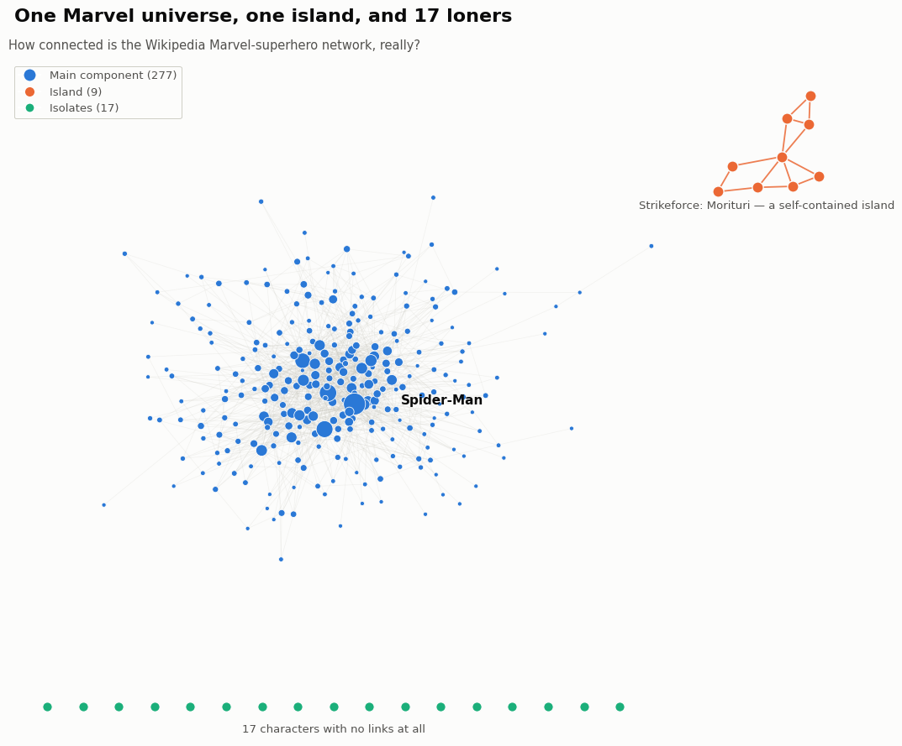

One universe, one island, and 17 loners
How connected is the Wikipedia Marvel-superhero network, really?

We started with a simple question: is this network really one connected universe, or are some corners of it cut off from everyone else?
Mostly yes — but not entirely. 277 of the 303 characters (91%) sit in one giant, tangled component held together by hubs like Spider-Man, who's linked from roughly a third of the whole network. But push past that main cluster and two things fall out: 17 characters with zero links in either direction, and a self-contained 9-person clique — the Strikeforce: Morituri team — that only ever link to each other, floating entirely outside the main universe.